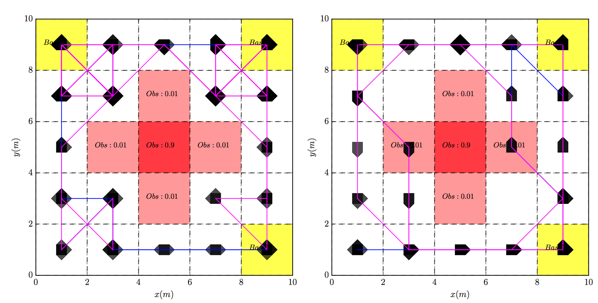

Meng's Software (P_MDP_TG)
P_MDP_TG
Planner for Markov Decision Process under Temporal Goals
Download at GitHub
Comments and contributions are most welcome!
Description:
this package contains the implementation for policy synthesis algorithms given a probabilistically-labeled Markov Decision Process (MDP) (as the robot motion model) and a Linear Temporal Logic (LTL) formula (as the robot task). It outputs a stationary and finite-memory policy consists of plan prefix and plan suffix, such that the controlled robot behavior fulfills the task with a given lower-bounded risk and minimizes the expected total cost.Features:
Allows probabilistic labels on MDP states.
Tunable trade-off between risk and expected total cost in the plan prefix.
Linear programs for solving constrained stochastic shortest path (SSP).
Optimization over both plan prefix and suffix.
Relaxed policy generation for cases where no accepting end components (AECs) exist.
Interface between LTL formula, Buchi Automaton, Deterministic Robin Automaton and NetworkX graph objects.
Computing maximal accepting end components (MAEC) of MDPs.
Application One
Follow the case_study.py
Total cost optimization over plan prefix and suffix.
With tunable risk paramter.
|  |
Application Two
Optimal policy generated off-line via this package.
Total cost optimization over plan prefix and suffix, with tunable risk paramter.
Executed in real-time via Py_iRobot_OptiTrack
Follow the plan_execution.py
 |